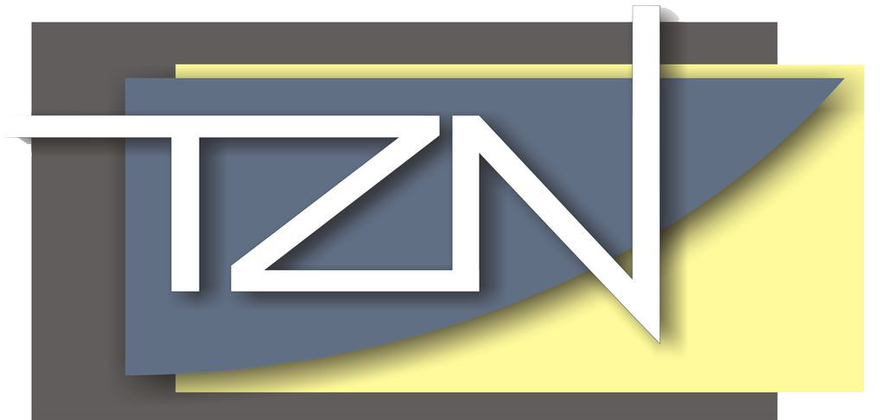

Zapraszamy do udziału w XV edycji Wojewódzkiego Konkursu Informatycznego Chipset
Autor: Marcin Kowalczyk Data: 20.01.2025
Dyrekcja Technicznych Zakładów Naukowych im gen Władysława Sikorskiego w Częstochowie serdecznie zaprasza uczniów klas VI, VII i VIII szkół podstawowych do udziału w XV edycji Wojewódzkiego Konkursu informatycznego Chipset. Nadrzędnym celem Konkursu jest popularyzacja posługiwania się technologią informacyjną i komunikacyjną wśród uczniów szkół podstawowych. Na zwycięzców czekają nagrody i dyplomy!
1. Konkurs składa się z dwóch etapów:
-
I etap internetowy, on-line odbędzie się 12 marca 2025 roku w godzinach od 10:00 do 15:00 i potrwa 45 minut, ma on charakter jednorazowego testu wykonywanego samodzielnie przez uczestników Konkursu za pomocą komputera na platformie e-learningowej. Test składa się z kilkudziesięciu pytań.
-
II etap szkolny odbędzie się 20 marca 2025 roku o godzinie 10:00 w Technicznych Zakładach Naukowych im gen Władysława Sikorskiego w Częstochowie ul. Jasnogórska 84/90 42-200 Częstochowa i polegał będzie na rozwiązaniu zadań teoretyczno-praktycznych w siedzibie organizatora Konkursu.
| Czas | Wydarzenie |
|---|---|
| 09:30 - 10:00 | Rejestracja grup przybyłych na II etap Wojewódzkiego Konkursu informatycznego Chipset |
| 10:00 - 10:30 | Wojewódzki Konkurs informatyczny Chipset II etap - rozwiązywanie arkusza konkursowego |
| 10:30 - 10:45 | Przerwa |
| 10:45 - 11:30 | Wojewódzki Konkurs informatyczny Chipset II etap - rozwiązywanie zadań praktycznych |
| 11:30 - 12:30 | Prezentacja Technicznych Zakładów Naukowych |
| 12:30 - 13:00 | Wręczenie nagród i zakończenie Konkursu |
W przypadku niesprzyjającej sytuacji epidemicznej Organizator zastrzega sobie prawo zmiany formy przeprowadzenia II etapu Konkursu na formę zdalną. Ostateczna informacja o obowiązującej formie przebiegu II etapu zostanie przekazana szkołom, uczestnikom i ich opiekunom w dniu ogłoszenia wyników I etapu Konkursu.
Zgłoszenie uczestników Konkursu
grup składających się z dwóch uczniów - następuje poprzez wypełnienie formularza na stronie Konkursu w dniach 20 stycznia 2025 - 07 marca 2025 r.
3. Regulamin Konkursu oraz szczegółowe informacje techniczne znajdują się na stronie Konkursu.
4. Dla uczestników Konkursu
przygotowaliśmy specjalną instrukcję odnośnie obsługi platformy e-learningowej MOODLE na której zostanie przeprowadzony Konkurs. Prosimy wszystkich uczestników o szczegółowe zapoznanie się z instrukcją.
Dyrektorów Szkół Podstawowych bardzo prosimy o zgłoszenie Konkursu CHIPSET do Kuratorium Oświaty w Katowicach, aby mógł być wpisany na świadectwa ukończenia szkoły podstawowej uczniów, których grupy uzyskają trzy pierwsze miejsca w rywalizacji (w regulaminie zostały wyróżnione zakresy informacji, które są niezbędne do zgłoszenia Konkursu)
Zapraszamy serdecznie do udziału w Konkursie i życzymy wszystkim sukcesu.
Organizator Konkursu
